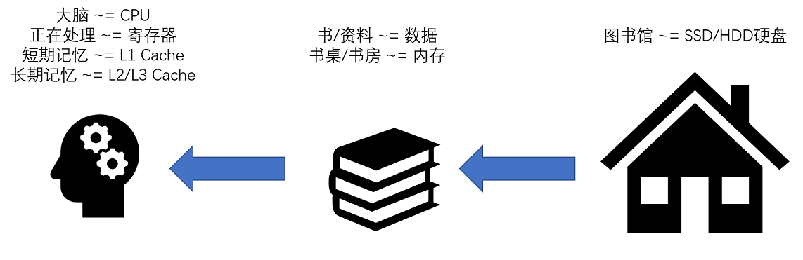

- 00 开篇词 为什么你需要学习计算机组成原理？.md.html
- 01 冯·诺依曼体系结构：计算机组成的金字塔.md.html
- 02 给你一张知识地图，计算机组成原理应该这么学.md.html
- 03 通过你的CPU主频，我们来谈谈“性能”究竟是什么？.md.html
- 04 穿越功耗墙，我们该从哪些方面提升“性能”？.md.html
- 05 计算机指令：让我们试试用纸带编程.md.html
- 06 指令跳转：原来if...else就是goto.md.html
- 07 函数调用：为什么会发生stack overflow？.md.html
- 08 ELF和静态链接：为什么程序无法同时在Linux和Windows下运行？.md.html
- 09 程序装载：“640K内存”真的不够用么？.md.html
- 10 动态链接：程序内部的“共享单车”.md.html
- 11 二进制编码：“手持两把锟斤拷，口中疾呼烫烫烫”？.md.html
- 12 理解电路：从电报机到门电路，我们如何做到“千里传信”？.md.html
- 13 加法器：如何像搭乐高一样搭电路（上）？.md.html
- 14 乘法器：如何像搭乐高一样搭电路（下）？.md.html
- 15 浮点数和定点数（上）：怎么用有限的Bit表示尽可能多的信息？.md.html
- 16 浮点数和定点数（下）：深入理解浮点数到底有什么用？.md.html
- 17 建立数据通路（上）：指令加运算=CPU.md.html
- 18 建立数据通路（中）：指令加运算=CPU.md.html
- 19 建立数据通路（下）：指令加运算=CPU.md.html
- 20 面向流水线的指令设计（上）：一心多用的现代CPU.md.html
- 21 面向流水线的指令设计（下）：奔腾4是怎么失败的？.md.html
- 22 冒险和预测（一）：hazard是“危”也是“机”.md.html
- 23 冒险和预测（二）：流水线里的接力赛.md.html
- 24 冒险和预测（三）：CPU里的“线程池”.md.html
- 25 冒险和预测（四）：今天下雨了，明天还会下雨么？.md.html
- 26 Superscalar和VLIW：如何让CPU的吞吐率超过1？.md.html
- 27 SIMD：如何加速矩阵乘法？.md.html
- 28 异常和中断：程序出错了怎么办？.md.html
- 29 CISC和RISC：为什么手机芯片都是ARM？.md.html
- 30 GPU（上）：为什么玩游戏需要使用GPU？.md.html
- 31 GPU（下）：为什么深度学习需要使用GPU？.md.html
- 32 FPGA、ASIC和TPU（上）：计算机体系结构的黄金时代.md.html
- 33 解读TPU：设计和拆解一块ASIC芯片.md.html
- 34 理解虚拟机：你在云上拿到的计算机是什么样的？.md.html
- 35 存储器层次结构全景：数据存储的大金字塔长什么样？.md.html
- 36 局部性原理：数据库性能跟不上，加个缓存就好了？.md.html
- 37 理解CPU Cache（上）：“4毫秒”究竟值多少钱？.md.html
- 38 高速缓存（下）：你确定你的数据更新了么？.md.html
- 39 MESI协议：如何让多核CPU的高速缓存保持一致？.md.html
- 40 理解内存（上）：虚拟内存和内存保护是什么？.md.html
- 41 理解内存（下）：解析TLB和内存保护.md.html
- 42 总线：计算机内部的高速公路.md.html
- 43 输入输出设备：我们并不是只能用灯泡显示“0”和“1”.md.html
- 44 理解IO_WAIT：IO性能到底是怎么回事儿？.md.html
- 45 机械硬盘：Google早期用过的“黑科技”.md.html
- 46 SSD硬盘（上）：如何完成性能优化的KPI？.md.html
- 47 SSD硬盘（下）：如何完成性能优化的KPI？.md.html
- 48 DMA：为什么Kafka这么快？.md.html
- 49 数据完整性（上）：硬件坏了怎么办？.md.html
- 50 数据完整性（下）：如何还原犯罪现场？.md.html
- 51 分布式计算：如果所有人的大脑都联网会怎样？.md.html
- 52 设计大型DMP系统（上）：MongoDB并不是什么灵丹妙药.md.html
- 53 设计大型DMP系统（下）：SSD拯救了所有的DBA.md.html
- 54 理解Disruptor（上）：带你体会CPU高速缓存的风驰电掣.md.html
- 55 理解Disruptor（下）：不需要换挡和踩刹车的CPU，有多快？.md.html
- 结束语 知也无涯，愿你也享受发现的乐趣.md.html
- 捐赠
35 存储器层次结构全景：数据存储的大金字塔长什么样？
今天开始，我们要进入到计算机另一个重要的组成部分，存储器。
如果你自己组装过 PC 机，你肯定知道，想要 CPU，我们只要买一个就好了，但是存储器，却有不同的设备要买。比方说，我们要买内存，还要买硬盘。买硬盘的时候，不少人会买一块 SSD 硬盘作为系统盘，还会买上一块大容量的 HDD 机械硬盘作为数据盘。内存和硬盘都是我们的存储设备。而且，像硬盘这样的持久化存储设备，同时也是一个 I/O 设备。
在实际的软件开发过程中，我们常常会遇到服务端的请求响应时间长，吞吐率不够的情况。在分析对应问题的时候，相信你没少听过类似“主要瓶颈不在 CPU，而在 I/O”的论断。可见，存储在计算机中扮演着多么重要的角色。那接下来这一整个章节，我会为你梳理和讲解整个存储器系统。
这一讲，我们先从存储器的层次结构说起，让你对各种存储器设备有一个整体的了解。
理解存储器的层次结构
在有计算机之前，我们通常把信息和数据存储在书、文件这样的物理介质里面。有了计算机之后，我们通常把数据存储在计算机的存储器里面。而存储器系统是一个通过各种不同的方法和设备，一层一层组合起来的系统。下面，我们把计算机的存储器层次结构和我们日常生活里处理信息、阅读书籍做个对照，好让你更容易理解、记忆存储器的层次结构。
我们常常把 CPU 比喻成计算机的“大脑”。我们思考的东西，就好比 CPU 中的寄存器（Register）。寄存器与其说是存储器，其实它更像是 CPU 本身的一部分，只能存放极其有限的信息，但是速度非常快，和 CPU 同步。
而我们大脑中的记忆，就好比CPU Cache（CPU 高速缓存，我们常常简称为“缓存”）。CPU Cache 用的是一种叫作SRAM（Static Random-Access Memory，静态随机存取存储器）的芯片。
SRAM
SRAM 之所以被称为“静态”存储器，是因为只要处在通电状态，里面的数据就可以保持存在。而一旦断电，里面的数据就会丢失了。在 SRAM 里面，一个比特的数据，需要 6～8 个晶体管。所以 SRAM 的存储密度不高。同样的物理空间下，能够存储的数据有限。不过，因为 SRAM 的电路简单，所以访问速度非常快。
[图片来源](https://commons.wikimedia.org/wiki/File:SRAM_Cell_(6_Transistors)
6 个晶体管组成 SRAM 的一个比特
在 CPU 里，通常会有 L1、L2、L3 这样三层高速缓存。每个 CPU 核心都有一块属于自己的 L1 高速缓存，通常分成指令缓存和数据缓存，分开存放 CPU 使用的指令和数据。
不知道你还记不记得我们在第 22 讲讲过的哈佛架构，这里的指令缓存和数据缓存，其实就是来自于哈佛架构。L1 的 Cache 往往就嵌在 CPU 核心的内部。
L2 的 Cache 同样是每个 CPU 核心都有的，不过它往往不在 CPU 核心的内部。所以，L2 Cache 的访问速度会比 L1 稍微慢一些。而 L3 Cache，则通常是多个 CPU 核心共用的，尺寸会更大一些，访问速度自然也就更慢一些。
你可以把 CPU 中的 L1 Cache 理解为我们的短期记忆，把 L2/L3 Cache 理解成长期记忆，把内存当成我们拥有的书架或者书桌。 当我们自己记忆中没有资料的时候，可以从书桌或者书架上拿书来翻阅。这个过程中就相当于，数据从内存中加载到 CPU 的寄存器和 Cache 中，然后通过“大脑”，也就是 CPU，进行处理和运算。
DRAM
内存用的芯片和 Cache 有所不同，它用的是一种叫作DRAM（Dynamic Random Access Memory，动态随机存取存储器）的芯片，比起 SRAM 来说，它的密度更高，有更大的容量，而且它也比 SRAM 芯片便宜不少。
DRAM 被称为“动态”存储器，是因为 DRAM 需要靠不断地“刷新”，才能保持数据被存储起来。DRAM 的一个比特，只需要一个晶体管和一个电容就能存储。所以，DRAM 在同样的物理空间下，能够存储的数据也就更多，也就是存储的“密度”更大。但是，因为数据是存储在电容里的，电容会不断漏电，所以需要定时刷新充电，才能保持数据不丢失。DRAM 的数据访问电路和刷新电路都比 SRAM 更复杂，所以访问延时也就更长。

存储器的层级结构
整个存储器的层次结构，其实都类似于 SRAM 和 DRAM 在性能和价格上的差异。SRAM 更贵，速度更快。DRAM 更便宜，容量更大。SRAM 好像我们的大脑中的记忆，而 DRAM 就好像属于我们自己的书桌。
大脑（CPU）中的记忆（L1 Cache），不仅受成本层面的限制，更受物理层面的限制。这就好比 L1 Cache 不仅昂贵，其访问速度和它到 CPU 的物理距离有关。芯片造得越大，总有部分离 CPU 的距离会变远。电信号的传输速度又受物理原理的限制，没法超过光速。所以想要快，并不是靠多花钱就能解决的。
我们自己的书房和书桌（也就是内存）空间一般是有限的，没有办法放下所有书（也就是数据）。如果想要扩大空间的话，就相当于要多买几平方米的房子，成本就会很高。于是，想要放下更多的书，我们就要寻找更加廉价的解决方案。
没错，我们想到了公共图书馆。对于内存来说，SSD（Solid-state drive 或 Solid-state disk，固态硬盘）、HDD（Hard Disk Drive，硬盘）这些被称为硬盘的外部存储设备，就是公共图书馆。于是，我们就可以去家附近的图书馆借书了。图书馆有更多的空间（存储空间）和更多的书（数据）。
你应该也在自己的个人电脑上用过 SSD 硬盘。过去几年，SSD 这种基于 NAND 芯片的高速硬盘，价格已经大幅度下降。
而 HDD 硬盘则是一种完全符合“磁盘”这个名字的传统硬件。“磁盘”的硬件结构，决定了它的访问速度受限于它的物理结构，是最慢的。
这些我们后面都会详细说，你可以对照下面这幅图了解一下，对存储器层次之间的作用和关联有个大致印象就可以了。

存储器的层次关系图
从 Cache、内存，到 SSD 和 HDD 硬盘，一台现代计算机中，就用上了所有这些存储器设备。其中，容量越小的设备速度越快，而且，CPU 并不是直接和每一种存储器设备打交道，而是每一种存储器设备，只和它相邻的存储设备打交道。比如，CPU Cache 是从内存里加载而来的，或者需要写回内存，并不会直接写回数据到硬盘，也不会直接从硬盘加载数据到 CPU Cache 中，而是先加载到内存，再从内存加载到 Cache 中。
这样，各个存储器只和相邻的一层存储器打交道，并且随着一层层向下，存储器的容量逐层增大，访问速度逐层变慢，而单位存储成本也逐层下降，也就构成了我们日常所说的存储器层次结构。
使用存储器的时候，该如何权衡价格和性能？
存储器在不同层级之间的性能差异和价格差异，都至少在一个数量级以上。L1 Cache 的访问延时是 1 纳秒（ns），而内存就已经是 100 纳秒了。在价格上，这两者也差出了 400 倍。
我这里放了一张各种存储器成本的对比表格，你可以看看。你也可以在点击这个链接，通过拖拉，查看 1990～2020 年随着硬件设备的进展，访问延时的变化。

因为这个价格和性能的差异，你会看到，我们实际在进行电脑硬件配置的时候，会去组合配置各种存储设备。
我们可以找一台现在主流的笔记本电脑来看看，比如，一款入门级的惠普战 66 的笔记本电脑。今天在京东上的价格是 4999 人民币。它的配置是下面这样的。
- Intle i5-8265U 的 CPU（这是一块 4 核的 CPU）
- 这块 CPU 每个核有 32KB，一共 128KB 的 L1 指令 Cache。
- 同样，每个核还有 32KB，一共 128KB 的 L1 数据 Cache，指令 Cache 和数据 Cache 都是采用 8 路组相连的放置策略。
- 每个核有 256KB，一共 1MB 的 L2 Cache。L2 Cache 是用 4 路组相连的放置策略。
- 最后还有一块多个核心共用的 12MB 的 L3 Cache，采用的是 12 路组相连的放置策略。
- 8GB 的内存
- 一块 128G 的 SSD 硬盘
- 一块 1T 的 HDD 硬盘
你可以看到，在一台实际的计算机里面，越是速度快的设备，容量就越小。这里一共十多兆的 Cache，成本只是几十美元。而 8GB 的内存、128G 的 SSD 以及 1T 的 HDD，大概零售价格加在一起，也就和我们的高速缓存的价格差不多。
总结延伸
这节的内容不知道你掌握了多少呢？为了帮助你记忆，我这里再带你复习一下本节的重点。
我们常常把 CPU 比喻成高速运转的大脑，那么和大脑同步的寄存器（Register），就存放着我们当下正在思考和处理的数据。而 L1-L3 的 CPU Cache，好比存放在我们大脑中的短期到长期的记忆。我们需要小小花费一点时间，就能调取并进行处理。
我们自己的书桌书架就好比计算机的内存，能放下更多的书也就是数据，但是找起来和看起来就要慢上不少。而图书馆更像硬盘这个外存，能够放下更多的数据，找起来也更费时间。从寄存器、CPU Cache，到内存、硬盘，这样一层层下来的存储器，速度越来越慢，空间越来越大，价格也越来越便宜。
这三个“越来越”的特性，使得我们在组装计算机的时候，要组合使用各种存储设备。越是快且贵的设备，实际在一台计算机里面的存储空间往往就越小。而越是慢且便宜的设备，在实际组装的计算机里面的存储空间就会越大。
在后面的关于存储器的内容里，我会带着你进一步深入了解，各个层次的存储器是如何运作的，在不同类型的应用和性能要求下，是否可以靠人工添加一层缓存层来解决问题，以及在程序开发层面，如何利用好不同层次的存储器设备的访问原理和特性。
补充阅读
如果你学有余力，关于不同存储器的访问延时数据，有两篇文章推荐给你阅读。
第一个是 Peter Novig 的Teach Yourself Programming in Ten Years。我推荐你在了解这些数据之后读一读这篇文章。这些数字随着摩尔定律的发展在不断缩小，但是在数量级上仍然有着很强的参考价值。
第二个是 Jeff Dean 的Build Software Systems at Google and Lessons Learned。这份 PPT 中不仅总结了这些数字，还有大量的硬件故障、高可用和系统架构的血泪经验。尽管这是一份 10 年前的 PPT，但也非常值得阅读。
© 2019 - 2023 Liangliang Lee. Powered by gin and hexo-theme-book.